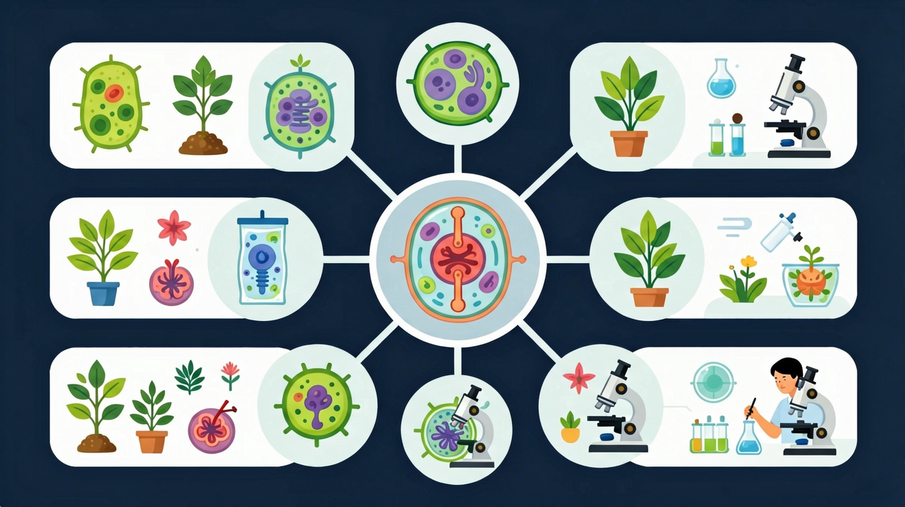
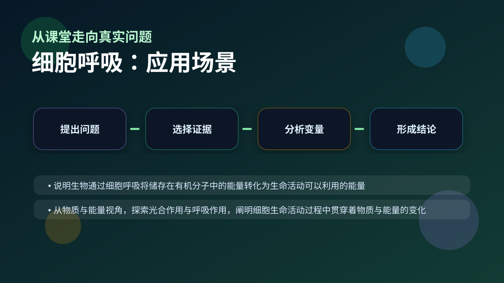

Gallery v1.0.0 · skill v7.14
物质和能量怎样在细胞里被转换，并最终支持生命活动？

已经知道：此前已学习过线粒体是细胞的能量工厂，知道光合作用合成有机物储存能量，并通过此前学段实验观察过萌发种子释放热量现象。
但问题是：学生常混淆有氧呼吸三个阶段的具体场所与产物，难以理解NADH与FADH2如何通过电子传递链转化能量，且易将无氧呼吸的乳酸发酵与酒精发酵条件混为一谈。
所以学：当分析运动员剧烈运动后肌肉酸痛原因时，需要准确区分有氧呼吸供能不足导致的乳酸积累与线粒体功能障碍，这要求掌握呼吸全过程的物质与能量转换关系。
先选一个卡点。后面的例子、互动和 AI 学伴都会围绕它给你最小提示。
选择或输入后，本课会围绕你的问题展开。
下列哪个结构直接参与有氧呼吸第三阶段？
现象入口：密闭装置中萌发种子消耗氧气并释放二氧化碳，温度还会升高。
机制解释：细胞呼吸分阶段氧化有机物，把化学能逐步转移到ATP和热能中；有氧和无氧途径产物与能量效率不同。
证据抓手：证据来自氧气消耗量、二氧化碳释放量、酒精或乳酸检测以及温度变化。
变量线索：氧气浓度、底物种类、温度、酶活性和线粒体功能。做题时先找变量，再判断机制，最后写证据。
观察线粒体结构图，区分内膜、基质与膜间隙
分步展示有氧呼吸三阶段反应物与产物变化
比较有氧与无氧呼吸中丙酮酸的不同去向
分析剧烈运动时肌肉细胞乳酸积累的原因
情境：酵母在无氧条件下产生酒精和二氧化碳，在有氧条件下则更充分氧化葡萄糖。
作答路径：现象：酵母有氧时使溴麝香草酚蓝由蓝变绿再变黄，无氧时重铬酸钾变灰绿。机制：有氧时丙酮酸进入线粒体彻底氧化为CO₂+H₂O，无氧时在细胞质基质还原为酒精+CO₂。证据：氧气浓度变化导致CO₂产生速率不同可通过传感器检测
评分提醒：典型失分：混淆有氧呼吸场所（如将第一阶段误认为线粒体）、写错无氧呼吸产物（如动物细胞产酒精）、遗漏[H]的来源（葡萄糖和水）
旋转 3D 分子模型，观察结构层级。请把结构特点和 细胞呼吸 中的功能解释对应起来：结构不是装饰，而是功能的证据。
💡 操作提示：拖拽旋转模型，思考“形状、空间位置、结合位点”如何影响生命活动。
随氧浓度升高，有氧呼吸速率上升并趋于饱和；无氧呼吸则被逐渐抑制。
💡 探究任务：调线粒体数量（最大速率），观察曲线饱和点变化，解释为什么储存水果要低氧而不是无氧。
把呼吸作用等同于“吸气呼气”，或只写总方程式不解释能量转化，是常见误区。
只说“增加/减少”不够，要写清改变的是 氧气浓度、底物种类、温度、酶活性和线粒体功能 中的哪一个。
没有实验现象、曲线趋势或结构证据，答案就像猜测。
关于无氧呼吸产物的叙述正确的是？
视频用语音和动态画面回顾本课主线：问题情境 → 机制模型 → 证据判断 → 迁移应用。

解释种子储藏、运动乳酸积累、酿酒发酵，都要判断呼吸方式和能量效率。
提交后会检查你的解释是否包含现象、机制和变量。
如果学生只说出概念名称，继续追问：题干里哪个证据最关键？这个证据对应分子、细胞、个体还是生态系统层级？如果改变 氧气浓度、底物种类、温度、酶活性和线粒体功能 中的一个条件，结果会怎样？这三问能把答案从背诵推进到科学解释。
写出有氧呼吸三阶段的反应场所与代表性产物
比较剧烈运动时肌细胞与酿酒酵母在缺氧条件下的代谢产物差异
设计实验证明乳酸菌无氧呼吸产物只含乳酸不产CO₂
关于细胞呼吸场所与产物的叙述正确的是？
学习小结：细胞呼吸分阶段把握三要点：糖酵解在细胞质基质产丙酮酸，有氧呼吸二三阶段在线粒体彻底氧化，无氧呼吸在细胞质基质不彻底氧化产乳酸或酒精+CO₂
先独立作答，再点选项查看对错与错因。
当人体剧烈运动时，骨骼肌细胞中直接导致乳酸积累的原因是
比较1分子葡萄糖在酵母菌和人体细胞中无氧呼吸的差异，正确的是
马拉松运动员后期主要依赖哪种呼吸方式供能？
细胞有氧呼吸第三阶段在____上进行，该过程伴随大量____生成。
答案：线粒体内膜,ATP
电子传递链位于内膜，氧化磷酸化产生ATP
酿酒过程中，酵母菌将葡萄糖分解为____和____两种终产物。
答案：酒精,二氧化碳
酵母菌无氧呼吸典型产物
关于细胞呼吸的叙述正确的是
设计实验区分酵母菌有氧/无氧呼吸的产物差异
❓ 为什么剧烈运动后肌肉会酸痛？
❓ 植物晚上会不会把自己憋死？
❓ 线粒体为啥叫'动力工厂'而不是'能量工厂'？
学完这一课，这些问题你都能自信地回答。
✅ 强调呼吸作用的本质是分解有机物释放能量
💡 将生理呼吸与细胞呼吸概念混淆
✅ 指出糖酵解阶段可净产2ATP
💡 忽略第一阶段反应场所和条件
口诀：一糖二环三传递，ATP产能真给力
类比：线粒体像汽车发动机，葡萄糖是汽油，氧气助燃，废气是CO2